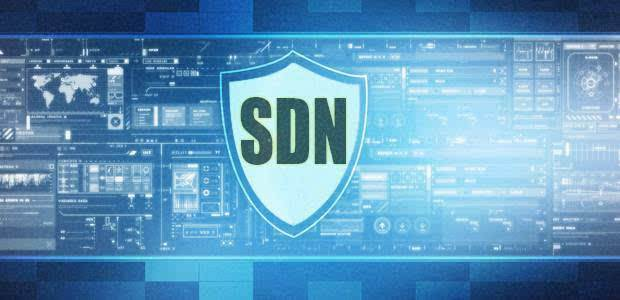
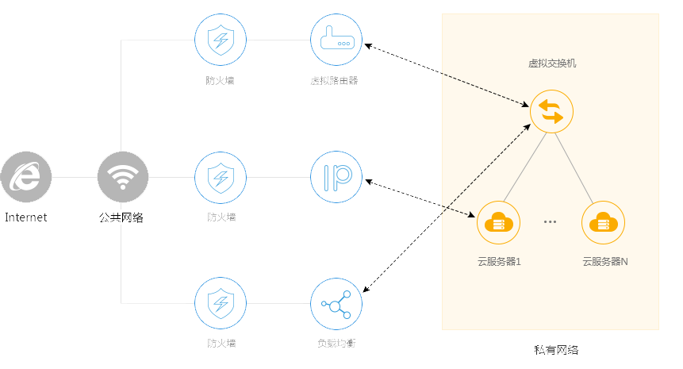

软件定义网络（Software Defined Network，SDN）
1.SDN架构定义
软件定义网络有效地将网络控制与物理网络拓扑分离，使得网络更为可编程化，灵活满足用户的需求。
有效地提高网络利用率，在节省大量成本的同时，大大缩短网络架构迭代的周期，实现对新业务的快速支持。

2.SDN架构特点
数据平面和控制平面分离：SDN 通过可编程的集中控制器控制底层硬件，能按需调配网络资源；解耦合的架构消除了底层网络设备的差异。
逻辑集中控制：SDN 域由集中统一的控制单元实施管理，在一个控制点完成网络的部署、运维和管理，这样能够合理地调用网络资源，进一步优化网络利用效率。
开放的接口和网络可编程性：SDN 的控制面是一个开放性可编程环境，企业、用户能通过可控的软件来部署相关功能、按需定制服务和应用。

3.SDN核心技术
应用层/业务层
由SDN应用构成，SDN应用能够通过可编程方式把需要请求的网络行为提交给控制器，其包含多个北向接口驱动，同时可对自身功能进行抽象、封装来对外提供北向代理接口。
北向接口
SDN北向接口是通过控制器向上层业务应用开放的接口，其目标是使得业务能够便利地调用底层的网络资源和能力。北向接口缺少业界公认的标准，成为当前SDN领域竞争的焦点。下图为ONF组织设计的北向接口。
控制层
控制层在SDN架构中处于核心地位，控制层既负责管理控制底层的网络转发设备，又负责向业务应用提供网络能力调用。主流控制器有NOX、Ryu、Floodlight、OpenDaylight等。